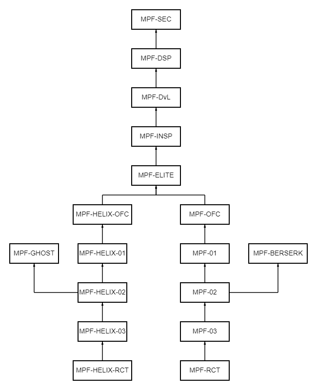

ГО
Гражданская Оборона — по замыслу Альянса, «полиция мыслей» во всех городских районах Земли. Их сотрудники называются «Метро Копы», в то время как используется и слитное написание «Метрокопы». «ГОшники» чаще всего используется гражданскими и членами Сопротивления.
Иерархия ГО:

Юниты ГО используют тен-коды для более бытрой передачи информации по рации и для большей секретности.
Тен-коды ГО:
- 10-0: Конец связи.
- 10-1: Не понял.
- 10-2: Никак нет/Отрицательно.
- 10-3: Радио канал был обнаружен/Прекратить трансляцию/радио-переговоры.
- 10-4: Принято/Вас понял/Так точно.
- 10-5: Транслировать данное сообщение/Транслировать сообщение.
- 10-6: Изменить радио-частоту.
- 10-7: Покинул службу, Без причины.
- 10-7A: Покинул службу, Отдых/Сон/Питание.
- 10-7B: Покинул службу, Персональные причины/Спец. приказы.
- 10-8: Заступил на службу.
- 10-8OT: Заступил на службу до (Время ведения службы).
- 10-9: Повторите...
- 10-10: Отстранен (уволен) от ведения службы, Без указания причины.
- 10-10A: Отстранен от ведения службы, Оздоровление/Нахождение на лечении/В запое.
- 10-11: Идентифицировать/Идентифицировать номера/Идентифицировать радио частоту.
- 10-12: Свидетели.
- 10-13: Как добраться к 10-20?
- 10-14: Гражданские рядом с целью.
- 10-15: Транспортировка заключённого.
- 10-16: Возьмите недееспособного/травмированного Узника.
- 10-18: Запрос на смену снаряжения.
- 10-19: Возвращаюсь в Нексус/Покинул пост.
- 10-20: Локация.
- 10-21: Устройство общения (Радио или Телефон).
- 10-21A: Запрашиваю Нексус/Секториального командира/Старшего юнита (любого).
- 10-22: Невыполнение ранее полученных приказов.
- 10-23: Ожидаю приказов.
- 10-25: Есть ли у нас/У вас, контакт с ним...?
- 10-26: Чисто/Все чисто/Зона чиста/Сектор под контролем.
- 10-27: Документ/Отчёт.
- 10-28: Подтвердить регистрацию/Запрашиваю регистрацию.
- 10-29F: Объект о котором идет речь, в розыске.
- 10-29H: Опасность/Объект смертельно опасен.
- 10-29M: Объект разыскивается за средние (или низкие нарушения).
- 10-30: Не соответствует протоколу.
- 10-31: Преступление в процессе.
- 10-33: Тревога!
- 10-34: Запрашиваю помощь в Нексус.
- 10-35: Время пребывания объекта в изоляторе?
- 10-36: Информация классифицирована как конфиденциальная.
- 10-37: Идентифицировать подозреваемого.
- 10-38: Контрольно-пропускной пункт.
- 10-39: Запрашиваю ответ.
- 10-40: Запрос о доступности юнитов, для радио передачи.
- 10-41: Нахожусь на службе/Несу службу.
- 10-42: Проверить состояние/Здоровье/Статус объекта.
- 10-43: Вызвать мед. работника.
- 10-44: Запрашиваю 10-7B.
- 10-45: Статус возможной цели, юнита, пациента или гражданина.
- 10-45A: Статус: в порядке/Живой/Незначительные повреждения.
- 10-45B: Серьезный/Возможен летальный исход.
- 10-45C: Критический/Очевиден летальный исход.
- 10-45D: Мёртв.
- 10-47: Требуется срочная поддержка Патруля.
- 10-48: Гражданский Контроль/Контроль передвижения.
- 10-49: Приступить к исполнению приговора.
- 10-50: Патрулирую/Нахожусь в патруле.
- 10-51: Юнит/Гражданский пьяный/нетрезвый.
- 10-52: Попытка реанимации/Реанимация.
- 10-53: Человек/Юнит ранен.
- 10-54: Возможно труп.
- 10-55: Обнаружен труп, 10-23 указаний.
- 10-57: Пропал Юнит/Гражданин.
- 10-58: Управление гражданскими/Управление юнитами/Управление движением.
- 10-59: Проверка безопасности.
- 10-60: Изоляция/Ком. час.
- 10-62: Встреча с гражданином.
- 10-62A: Принимаю доклад от гражданина.
- 10-62B: Гражданский ожидает указаний.
- 10-63: Подготовка к копированию отчета.
- 10-64: Найдена контрабанда.
- 10-65: Все Юниты, получить задание.
- 10-66: Подозрительный гражданин.
- 10-67: Гражданин запрашивает помощь.
- 10-70: Гражданин скрывается.
- 10-71: Стрельба.
- 10-72: Оружие задействовано, огонь не открыт.
- 10-73: Будьте готовы войти в бой с противником.
- 10-74: Обнаружен вор/воровство.
- 10-75: Серьёзный инцидент.
- 10-76: Выдвигаюсь на место преступления.
- 10-78: Отправить помощь/Отправить мед. помощь/Отправить юнита для поддержки.
- 10-79: Угроза взрыва.
- 10-80: Взрыв.
- 10-82: Подготовить клетку для задержаного.
- 10-83: Обезопасить движение на КПП.
- 10-85: Прибытие задерживается из-за (причина).
- 10-86: Замечены нелегальные радио-трансляции?
- 10-87: Прошу сказать радио-частоту для пользования.
- 10-88: Юнит, прибыть на указанный пост.
- 10-89: Угроза взрыва на 10-20.
- 10-90: Внимание, совершено преступление.
- 10-91: Гражданин.
- 10-91A: Гражданин, Тунеядец/Бездомный.
- 10-91B: Гражданин, Кричит.
- 10-91C: Гражданин, Травмирован/Ранен/Недееспособен.
- 10-91D: Гражданин Мёртв.
- 10-91E: Гражданин, Напал на Гражданина/Юнита.
- 10-91F: Множество граждан нападают на Граждан/Юнитов.
- 10-91L: Гражданский задержан.
- 10-92: Подозреваемый изолирован.
- 10-93: Группа гражданских была изолирована.
- 10-96: Душевнобольной задержан.
- 10-97: Юнит на месте преступления, осмотр и документация.
- 10-98: Задание выполнено.
- 10-99: Офицеру требуется помощь/Офицер под огнём.
- 10-100: Сообщение о нарушении.
- 10-101: Окончание инспекции.
- 10-102: Жестокое обращение к другому лицу.
- 10-103: Дефективный гражданин/юнит/боевая еденица.
- 10-106: Нецензурная лексика.
- 10-107: Подозрительный человек, возможно преступник.
- 10-108: Офицер ранен/Офицер в опасности.
- 10-110: Нарушитель высокого уровня.
- 10-112: Выдача себя за сотрудника ГО.
- 10-1000: Труп Юнита опознан.
- 10-2000: Запрашиваю подкрепление.
Статуc-коды:
- КОД 1 Выносить приговор по усмотрению, тревога.
- КОД 2 Оружие в руках, приготовиться к сдерживанию.
- КОД 3 Опасность не подтверждена, ожидайте.
- КОД 4 Ситуация под контролем, отбой тревоге.
- КОД 4A Ситуация не под контролем, сотрудники прибыли на место.
- КОД 4N Подкрепления не требуются, доказательств преступления не найдено.
- КОД 5 Ведётся слежка.
- КОД 6 Покинул службу для расследования.
- КОД 12 Вернуться к патрулированию.
- КОД 77 Возможно засада.
- STATUS: RED Аналогично коду 1.
- STATUS: ORANGE Аналогично коду 2.
- STATUS: YELLOW Аналогично коду 3.
- STATUS: GREEN Аналогично коду 4.
Спец-коды:
- ИЗОЛИРОВАТЬ - задержать, доставить в карцер.
- ОКРУЖИТЬ - окружить цель.
- УСМИРИТЬ - подавить, заставить подчиняться.
- СТЕРИЛИЗОВАТЬ - промыть мозг, и подменить память, очистив её.
- ДОЛГ - Выполнить любой ценой.
- МЕЧ - уничтожить, агрессивное нападение.
- СОБРАТЬ - Собрать нарушителей в одну кучу.
- ЗАДЕРЖАТЬ - задержать цель, без ликвидации.
- ОГЛАСИТЬ - Придать приговор огласке, объявить о приговоре общественности.
- ИСПОЛНИТЬ - Привести приговор в исполнение.
- ОТРЕАГИРОВАТЬ - Отреагировать на какое-либо антиобщественное действие.
- ДОПРОСИТЬ - Произвести допрос.
- ПОЛНОЧЬ - Во время боя полное радиомолчание.
- ОТСЕЧЬ - Произвести ампутацию (ликвидацию) цели.
- ОБНУЛИТЬ - Уничтожить всеми возможными способами; ампутировать.